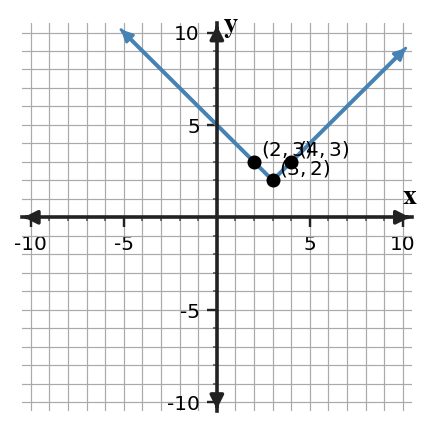
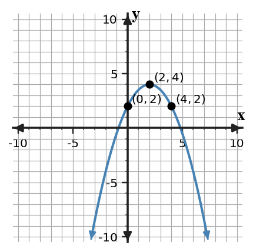

A source-grounded study guide for vocabulary, rules and relationships, section targets, representations, common misconceptions, and reasoning across DOK levels.
Unit at a Glance
What ties Unit 4 together?
Students will analyze, represent, model, and interpret common function families and their transformations across graphs, equations, tables, and contexts.
1Recognize familiesUse patterns, equations, and graph shape.
→
2TranslateShift parent functions horizontally and vertically.
→
3TransformScale, reflect, and track key features.
→
4Analyze structureOperate on polynomials and connect forms to graphs.
Unit Vocabulary & Representations
Words and representations worth knowing cold
These source-supported terms and representation types organize the work across the unit.
4.1 Recognizing Function Families
Graphs of parent and familiar function familiesTables showing constant differences, second differences, or ratiosEquations in recognizable family formsContexts involving change patternsFeature language such as intercept, vertex, rate, and symmetry
4.2 Translations
Parent function graphsTranslated graphs on coordinate gridsEquations in transformation formKey points, vertices, intercepts, and asymptotes where appropriateTables before and after translation
4.3 Transformations
Transformation equations using parametersGraphs showing vertical stretches and compressionsGraphs reflected over an axisTables transformed from parent-function valuesKey features such as vertex, intercepts, symmetry, and rate behavior
4.4 Polynomial Operations
Polynomial expressions in standard and factored formsArea models and algebra tilesTables of expression valuesEquivalent expressions after combining or multiplying termsContextual diagrams involving length, width, area, and total change
4.5 Polynomial Structure and Quadratic Graphs
Quadratic expressions in equivalent formsParabolas with vertex, intercepts, and axis of symmetryTables showing quadratic patternsFactored or expanded expressions connected to graph featuresContexts modeled by quadratic relationships
Rules, Forms & Relationships
The structures Unit 4 expects you to use
Use these relationships only in the situations where their structure applies. The section review below shows how they connect to representations and contexts.
Vertical translation
$g(x)=f(x)+k$
Positive $k$ shifts a graph up; negative $k$ shifts it down.
Horizontal translation
$g(x)=f(x-h)$
Positive $h$ shifts a graph right; the sign appears opposite inside the input.
Scale / reflection
$g(x)=af(x)$
The size of $|a|$ changes vertical scale; a negative $a$ reflects across the $x$-axis.
Quadratic vertex form
$y=a(x-h)^2+k$
The vertex is $(h,k)$ and $a$ controls direction and vertical scale.
Absolute-value form
$y=a|x-h|+k$
The vertex is $(h,k)$ and $a$ controls opening direction and steepness.
Polynomial multiplication
$(x+p)(x+q)=x^2+(p+q)x+pq$
Area/distribution structure connects factors to an expanded quadratic.
Students will identify common function families from graphs, equations, tables, and contexts.
I can…
I can construct evidence for a function family using patterns in graphs, equations, tables, and contexts.
I can apply family features to sort representations into linear, quadratic, exponential, absolute value, and other familiar forms.
I can determine which representation gives the strongest evidence for a function family when features seem similar.
Summary
Today you identified function families by using evidence from tables, graphs, equations, and contexts. A strong answer names the family and explains why the evidence fits.
Linear tables have constant first differences, quadratic tables have constant second differences, and exponential tables have constant ratios when inputs increase evenly.
A common error is choosing a family because outputs increase or because a graph looks familiar without checking evidence.
Strong understanding means you can compare clues and decide which representation gives the clearest support for a family choice.
Function-family graph comparison.
Key representations:Graphs of parent and familiar function familiesTables showing constant differences, second differences, or ratiosEquations in recognizable family formsContexts involving change patternsFeature language such as intercept, vertex, rate, and symmetry
DOK 1
Recognize and interpret graphs of parent and familiar function families and the basic features used in this section.
DOK 2
apply family features to sort representations into linear, quadratic, exponential, absolute value, and other familiar forms
DOK 3
determine which representation gives the strongest evidence for a function family when features seem similar
DOK 4
Use data patterns to choose a reasonable function family for a situation
Common traps to avoid
Only noticing growth
Why it is tempting: many functions increase. What to check instead: check differences, ratios, and shape.
Forgetting equal input steps
Why it is tempting: difference patterns are easier to compute than reading the whole table. What to check instead: confirm the input increases by the same amount.
Calling faster growth exponential
Why it is tempting: exponential graphs often grow quickly. What to check instead: look for a constant ratio.
Ignoring graph features
Why it is tempting: shape feels obvious. What to check instead: connect the shape to vertex, symmetry, intercepts, or rate behavior.
Students will graph and write translated functions using key points and key features.
I can…
I can build translated graphs by moving key points and key features from a parent function.
I can use horizontal and vertical shifts to write equations for translated functions.
I can predict how changing values in an equation moves a graph left, right, up, or down.
Summary
Today you used key points and key features to translate functions. A translation moves the graph without changing its shape.
Outside changes like $f(x)+k$ move outputs up or down, while inside changes like $f(x-h)$ move key input locations left or right.
A common error is reading $x-h$ as left because of the minus sign instead of locating where the inside equals zero.
Strong understanding means you can move a vertex or other key point, sketch the new graph, and write an equation that matches the movement.

Translated absolute-value graph.
Key representations:Parent function graphsTranslated graphs on coordinate gridsEquations in transformation formKey points, vertices, intercepts, and asymptotes where appropriateTables before and after translation
DOK 1
Recognize and interpret parent function graphs and the basic features used in this section.
DOK 2
use horizontal and vertical shifts to write equations for translated functions
DOK 3
predict how changing values in an equation moves a graph left, right, up, or down
DOK 4
Shift a model to represent a changed starting value or benchmark
Common traps to avoid
Reading the inside sign literally
Why it is tempting: the symbol appears to point one direction. What to check instead: find the input that makes the inside match the parent key input.
Moving only the vertex
Why it is tempting: the vertex is the most visible point. What to check instead: move several key points to preserve shape.
Changing shape during a translation
Why it is tempting: redrawing from memory can distort the graph. What to check instead: check symmetric points or matching points.
Mixing up input and output changes
Why it is tempting: both shifts use numbers in the equation. What to check instead: outside changes outputs; inside changes inputs.
Students will analyze and graph transformations involving stretches, compressions, and reflections.
I can…
I can design transformed graphs using stretches, compressions, reflections, and translations of parent functions.
I can apply transformation rules to key points and features across function families.
I can assess whether an equation, graph, or table represents the same transformed function.
Summary
Today you analyzed transformations that stretch, compress, reflect, and translate parent functions. You used key points to make those changes visible.
A multiplier outside the function changes outputs, a negative outside reflects over the $x$-axis, and shifts move the key features to new locations.
A common error is changing the graph by eye without checking key points or substituting values.
Strong understanding means you can explain how an equation, graph, and table show the same transformed function.

Transformed quadratic graph.
Key representations:Transformation equations using parametersGraphs showing vertical stretches and compressionsGraphs reflected over an axisTables transformed from parent-function valuesKey features such as vertex, intercepts, symmetry, and rate behavior
DOK 1
Recognize and interpret transformation equations using parameters and the basic features used in this section.
DOK 2
apply transformation rules to key points and features across function families
DOK 3
assess whether an equation, graph, or table represents the same transformed function
DOK 4
Adjust a parent function to fit a steeper, flatter, or reflected situation
Common traps to avoid
Forgetting the reflection
Why it is tempting: the stretch number gets attention first. What to check instead: check the sign of the outside multiplier.
Stretching inputs instead of outputs
Why it is tempting: tables have both inputs and outputs. What to check instead: outside multipliers change outputs.
Moving points in the wrong order
Why it is tempting: several transformations feel crowded. What to check instead: start with the parent key point and apply each change.
Trusting a table without checking
Why it is tempting: tables look official. What to check instead: substitute at least one input into the equation.
Students will add, subtract, and multiply polynomial expressions.
I can…
I can formulate polynomial sums, differences, and products from area, perimeter, and expression contexts.
I can use structure and like terms to add, subtract, and multiply polynomial expressions.
I can extend polynomial operations to equivalent expressions written in different forms.
Summary
Today you identified polynomial terms and used structure to operate with polynomial expressions. You connected symbolic products to area models.
Like terms have the same variable part and exponent, and area models show all partial products before like terms are combined.
A common error is dropping a negative sign or combining terms that are not like terms.
Strong understanding means you can move among factored form, expanded form, and a visual model while keeping the expression equivalent.
Area model for polynomial multiplication.
Key representations:Polynomial expressions in standard and factored formsArea models and algebra tilesTables of expression valuesEquivalent expressions after combining or multiplying termsContextual diagrams involving length, width, area, and total change
DOK 1
Recognize and interpret polynomial expressions in standard and factored forms and the basic features used in this section.
DOK 2
use structure and like terms to add, subtract, and multiply polynomial expressions
DOK 3
extend polynomial operations to equivalent expressions written in different forms
DOK 4
Represent area or perimeter situations with polynomial expressions
Common traps to avoid
Dropping signs
Why it is tempting: students focus on numbers and variables. What to check instead: treat the sign as part of the term.
Combining unlike terms
Why it is tempting: simplifying feels like everything should combine. What to check instead: only combine terms with the same variable part and exponent.
Skipping a partial product
Why it is tempting: mental multiplication is fast. What to check instead: use four products or an area model.
Misreading area labels
Why it is tempting: row and column labels can look decorative. What to check instead: multiply every row label by every column label.
Students will connect polynomial expressions to quadratic graphs and key features.
I can…
I can construct connections between polynomial structure, quadratic graphs, and key features.
I can predict graph features from equivalent quadratic expressions.
I can critique whether a polynomial expression supports a claimed vertex, intercept, axis of symmetry, or direction of opening.
Summary
Today you connected polynomial structure to quadratic graph features. You used expression form to decide which features were easiest to identify.
Vertex form highlights the vertex and axis of symmetry, while factored form highlights zeros and $x$-intercepts.
A common error is using a form that does not directly support the feature being claimed.
Strong understanding means you can choose a useful form, interpret the graph feature, and critique whether the evidence supports a claim.
Quadratic graph features and vertex.
Key representations:Quadratic expressions in equivalent formsParabolas with vertex, intercepts, and axis of symmetryTables showing quadratic patternsFactored or expanded expressions connected to graph featuresContexts modeled by quadratic relationships
DOK 1
Recognize and interpret quadratic expressions in equivalent forms and the basic features used in this section.
DOK 2
predict graph features from equivalent quadratic expressions
DOK 3
critique whether a polynomial expression supports a claimed vertex, intercept, axis of symmetry, or direction of opening
DOK 4
Use expression structure to predict features of a quadratic model
Common traps to avoid
Reading the vertex sign incorrectly
Why it is tempting: vertex form contains parentheses. What to check instead: solve the inside for zero and use the outside value.
Thinking factored form shows the vertex
Why it is tempting: zeros may feel like enough information. What to check instead: use the midpoint of zeros to get the axis, then find the vertex if needed.
Ignoring opening direction
Why it is tempting: feature points get most attention. What to check instead: check the leading coefficient or graph direction.
Assuming equivalent forms show different graphs
Why it is tempting: forms look different. What to check instead: remember equivalent expressions represent the same quadratic.
Unit Mastery by DOK
A second way to organize the review
Sections tell you which topic you are reviewing. DOK tells you how deeply you need to use it.
DOK 1 · Recognize
Control notation and basic features
Recognize the key features and notation used in Recognizing Function Families.
Recognize the key features and notation used in Translations.
Recognize the key features and notation used in Transformations.
Recognize the key features and notation used in Polynomial Operations.
Recognize the key features and notation used in Polynomial Structure and Quadratic Graphs.
DOK 2 · Apply & Represent
Use procedures and representations
apply family features to sort representations into linear, quadratic, exponential, absolute value, and other familiar forms.
use horizontal and vertical shifts to write equations for translated functions.
apply transformation rules to key points and features across function families.
use structure and like terms to add, subtract, and multiply polynomial expressions.
predict graph features from equivalent quadratic expressions.
DOK 3 · Reason & Critique
Use evidence to defend or revise
determine which representation gives the strongest evidence for a function family when features seem similar.
predict how changing values in an equation moves a graph left, right, up, or down.
assess whether an equation, graph, or table represents the same transformed function.
extend polynomial operations to equivalent expressions written in different forms.
critique whether a polynomial expression supports a claimed vertex, intercept, axis of symmetry, or direction of opening.
DOK 4 · Design & Synthesize
Build and connect models
Use data patterns to choose a reasonable function family for a situation
Shift a model to represent a changed starting value or benchmark
Adjust a parent function to fit a steeper, flatter, or reflected situation
Represent area or perimeter situations with polynomial expressions
Use expression structure to predict features of a quadratic model
Before the Summative
Can you do these without notes?
Vocabulary & Concepts
Recognizing Function Families
Translations
Transformations
Polynomial Operations
Polynomial Structure and Quadratic Graphs
Representations & Procedures
apply family features to sort representations into linear, quadratic, exponential, absolute value, and other familiar forms.
use horizontal and vertical shifts to write equations for translated functions.
apply transformation rules to key points and features across function families.
use structure and like terms to add, subtract, and multiply polynomial expressions.
predict graph features from equivalent quadratic expressions.
Reasoning & Modeling
determine which representation gives the strongest evidence for a function family when features seem similar.
predict how changing values in an equation moves a graph left, right, up, or down.
assess whether an equation, graph, or table represents the same transformed function.
extend polynomial operations to equivalent expressions written in different forms.
critique whether a polynomial expression supports a claimed vertex, intercept, axis of symmetry, or direction of opening.
Strong Algebra work connects procedures to structure, checks representations against one another, and explains why the result fits the mathematical situation.